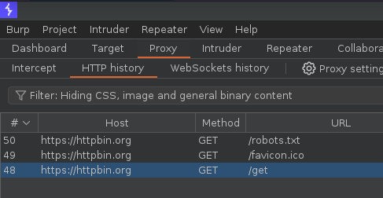
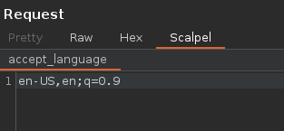
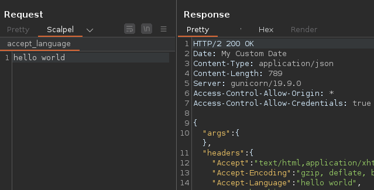

Welcome to your first steps with Scalpel! This beginner-friendly tutorial will walk you through basic steps to automatically and interactively modify HTTP headers using Scalpel. By the end of this tutorial, you’ll be able to edit the content of the User-Agent and Accept-Language headers using Scalpel’s hooks and custom editors.
Let’s start by inspecting a basic GET request. Open https://httpbin.org/get in your Burp suite’s browser. This site simply returns details of the requests it receives, making it perfect for this example case.
Then, get back to Burp Suite. The GET request should show in your HTTP history.

Send it to Repeater using CTRL-R or right-click → Send to Repeater
Custom editors in Scalpel allow you to interactively change specific parts of a request. Let’s create an editor to change the Accept-Language header manually:
Thanks to these hooks, when you open a GET request in Burp Suite, you’ll see an additional Scalpel tab. This tab enables you to edit the Accept-Language header’s content directly.

Once edited, Scalpel will replace the original Accept-Language value with your edited version.

Congratulations! In this tutorial, you’ve taken your first steps with Scalpel. You’ve learned how to inspect GET requests, manipulate HTTP headers automatically, and create custom editors for interactive edits.
Remember, Scalpel is a powerful tool with a lot more capabilities. As you become more familiar with its features, you’ll discover its potential to significantly enhance your web security testing workflow.